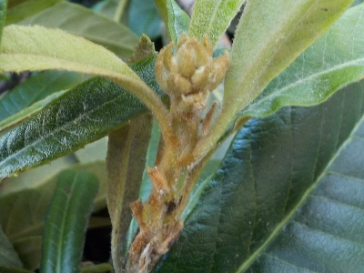
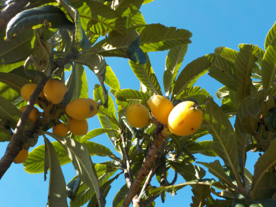
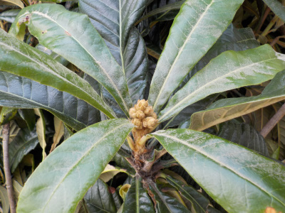
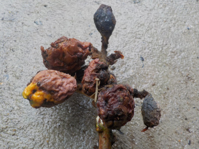
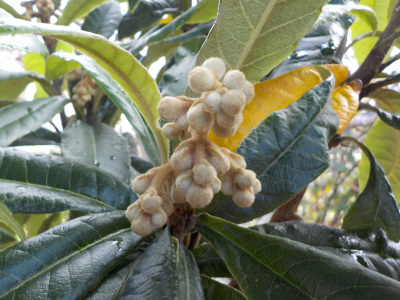
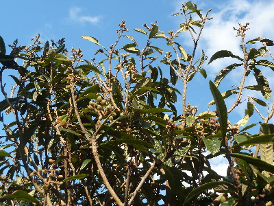
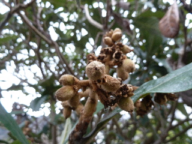
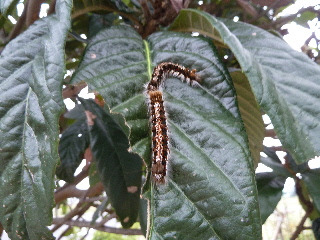
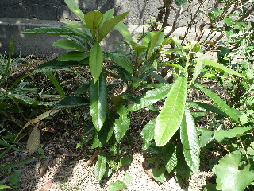
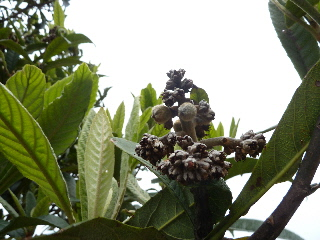

ビワの枝を沢山剪定しました。
2024/10/12

あんまり大きくなって手が届かなくなったら嫌なので、高く伸びそうな枝を切りました。
実は脚立を使って手が届く範囲にできた方がいいですよね。
2024/10/12

あんまり大きくなって手が届かなくなったら嫌なので、高く伸びそうな枝を切りました。
実は脚立を使って手が届く範囲にできた方がいいですよね。
2023/06/03

2012年に種蒔きしたので、11年経ちました。
今年は害虫被害が少なく、沢山ビワが食べれます。
良かった良かった。なんで今年は被害が少なかったんだろう？
2022/10/02

びわ剪定は花が咲いてる今頃だったはずなので剪定しました。
でも花の時期に剪定って他に木では聞かないんじゃないかな。
実が出来るように花を残してもいいですが、込み入った所を空きたかったのでバサバサ切りました。
2021/06/13

毛虫とかゾウムシがいるって気づいたときはもう遅く、そのまま放置していたら真っ黒になりました。
実は沢山あったんですけど全滅です。
来年からは袋掛けをしてみようかな。
2020/11/23

実生のビワが初めて花を付けました。
秋に花がなかったので今年もダメだと思っていましたが、今頃花が出来ていました。
これから寒くなりますが、受粉とか出来るかな。
2016/02/07
長崎産路地ビワが壊滅的ってニュースを見ました。

長崎が駄目なら、ここも駄目かな？
どうなんだろう？
最近害虫の被害でビワを食べていなかったので、今年こそは収獲するぞ！って気分だったのにな。
2015/02/22
小さい実が沢山ついていますね。

実をまびいた方がいいんでしょうけど、毎年このビワは虫に食べられているので今年は何もしない予定。
沢山実があったら、少しは虫の被害にあわないものが出るかも？
2014/11/08
まだ毛虫出るんだ。

只今ビワの木に毛虫が大量発生中です。
寒いのにこれ育つの？
2014/08/31
ちょっと大きくなりましたね。

2012年に種を蒔いているので、２年でこのサイズです。
50センチはあるので、順調にそだっているのかな。
2014/04/19
花殻に実がいくつか出来ていました。

大きな実になって欲しいので、摘果しました。
去年は実が大きくならなかったので、今年こそは！って思っています。
2013/09/28
ビワがあんまり大きくなってなーい。
2013/06/02
ビワが駄目になってる。
2013/04/13
ビワの摘果を初めてしました。
2012/09/22
ビワを地植えにしました。
2012/09/08
ビワの芽が出ていました。（2本目）
2012/07/28
ビワの芽が出ました。
2012/06/17
茂木ビワの種です。
2010/07/17
ビワが枯れてました。
2010/07/03
ビワの芽がやっと出ました
2010/06/02
ビワの種を蒔きました
畑仕事じゃないよ。